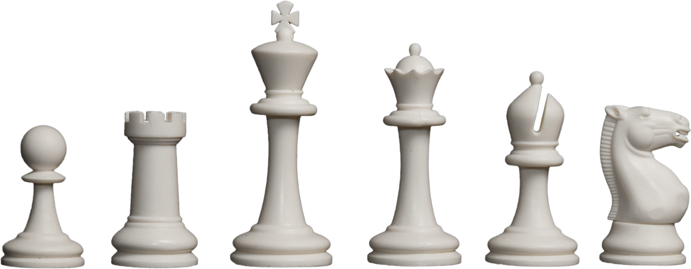

Quem somo nós?
Seja bem-vindo! Aqui apreciamos o xadrez romântico e gostamos de jogar em conexão com a natureza. Faça partReie do nosso clube!
Seja bem-vindo! Aqui apreciamos o xadrez romântico e gostamos de jogar em conexão com a natureza. Faça partReie do nosso clube!
O xadrez é uma arte para nós, temos admirações que vão além da potência dos jogadores. Você também pode ser uma!